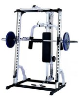

Body Systems LSM400
Linear Smith Machine
Overview
- Linear Smith Machines are the ultimate in weight machines and the LSM400 leads the field. Designed for both serious fitness users and beginners, the LSM400's vertical design provides all of the safety and control associated with Smith
Machines, while still allowing for the effective use of gravity for effective resistance. You don't even need a workout partner. Lock points can be set to prevent the bar from movement outside of your body's natural range of motion.
- You can tailor the LSM400 to meet you specific workout needs. Start with the basic package of the Smith Machine rack and, as your needs grow, add a lat/row, pec dec, plate tree, dip, and accessory organizer. Accessories are easy to insert
and remove, allowing you to continue your workout without delay.
- The LSM400 works with all standard Olympic weight plates
- The LSM400 is compact with all components place one side of the unit for easy access. This makes the LSM400 perfect for people who want a quality home gym, but do not have a lot of space. Place the LSM400 against a wall and you're ready
to go!